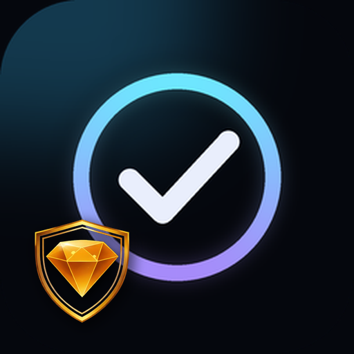
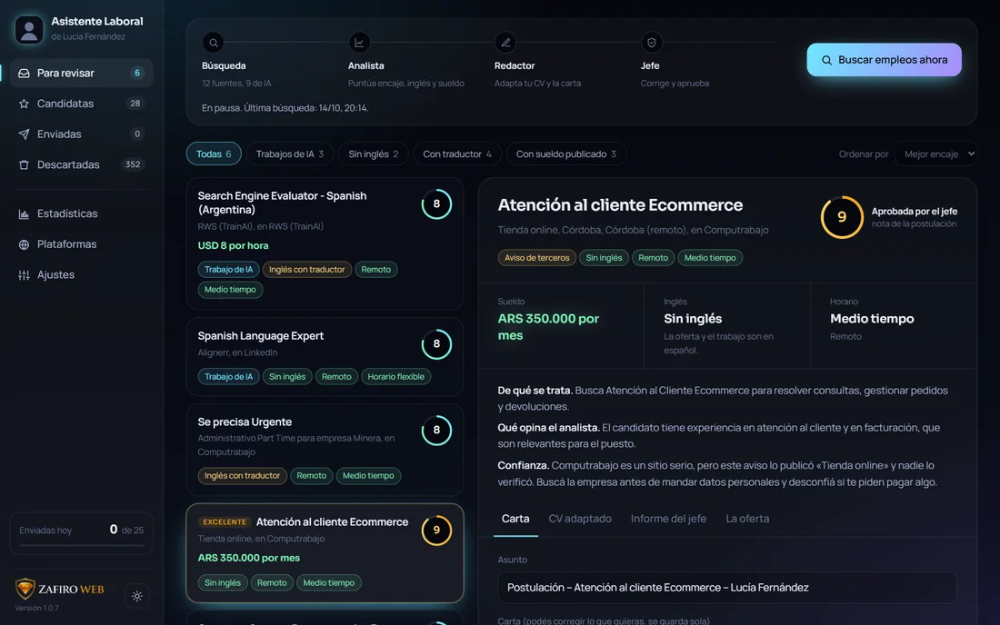
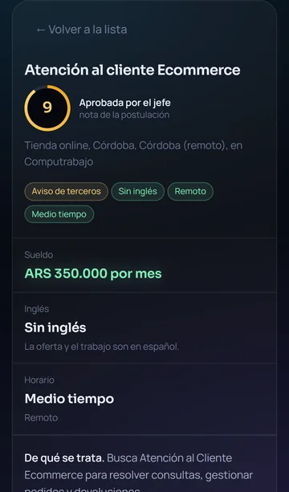

Asistente LaboralBusca ofertas todos los días en 12 sitios, te dice cuáles te convienen y por qué, adapta tu CV y escribe la carta para cada una. Vos solo revisás y enviás.
Descargar gratis para WindowsWindows 10 u 11 · necesita Google Chrome · 44 MB


Funciona para cualquier profesión: lee tu CV y aprende qué sabés hacer y qué estás buscando.
LinkedIn, Computrabajo, Get on Board y nueve plataformas que pagan en dólares por entrenar inteligencia artificial.
Un analista le pone nota a cada oferta: si encaja con tu experiencia, cuánto inglés pide, el horario y el sueldo.
Un redactor arma un CV a medida para cada oferta y un jefe lo revisa. No inventa nada: usa solo lo que dice tu CV.
Escaneás un código y mirás tus postulaciones desde el teléfono. En iPhone queda como una app más.
Usa GLM-4.5-Flash de Z.ai, que es gratis. Sacás tu clave en 3 minutos y sin tarjeta.
Todo queda en tu computadora. Tu CV y tus datos no se suben a ningún servidor de ZafiroWeb.
Cuatro ayudantes con inteligencia artificial, uno detrás del otro, todos los días.
Son 5 minutos. El mismo programa te guía paso a paso la primera vez.
Necesitás Google Chrome instalado (lo usa para postularte y armar tus CVs en PDF). Si no lo tenés, bajalo de google.com/chrome.
Lo que más nos preguntan antes de instalarlo.
Sí. El programa es gratis y la inteligencia artificial que usa (GLM-4.5-Flash de Z.ai) también: sacás tu propia clave en 3 minutos, sin tarjeta.
Las de entrenamiento de IA (Mercor, Alignerr, Appen, Telus, Micro1 y las demás) son empresas conocidas que pagan en dólares por Stripe, PayPal, Wise o Payoneer. Lo que no garantizan es trabajo constante: a veces te aceptan y hay pocos proyectos. En LinkedIn, Computrabajo y Get on Board publica cualquier empresa: el asistente marca cada aviso como «de terceros» y avisa si ve señales de estafa, pero revisá la empresa antes de mandar tus datos.
Sí. Para cada oferta arma un PDF nuevo: cambia el título, reescribe tu perfil, ordena tu experiencia según lo que pide el puesto y elige las habilidades que más sirven. Nunca inventa: usa solo lo que dice tu CV, y un «jefe» lo controla.
Todo queda en tu computadora. Tu CV, tus postulaciones y tus claves no se suben a ningún servidor de ZafiroWeb; las contraseñas se guardan cifradas con tu usuario de Windows.
Prepara todo y, si querés, completa el formulario de la plataforma por vos. El botón final de enviar lo tocás vos (en Computrabajo podés dejar que lo toque solo).
Se instala en una computadora con Windows 10 u 11. Desde ahí podés abrirlo en el celular (iPhone o Android) escaneando un código. Por ahora no hay versión para Mac.
Solo. Cuando sale una versión nueva, el asistente la instala en cuanto termina lo que está haciendo y se vuelve a abrir. No tenés que bajar nada otra vez.
Gratis, en 5 minutos y con tu propio CV.
Descargar gratis para Windows